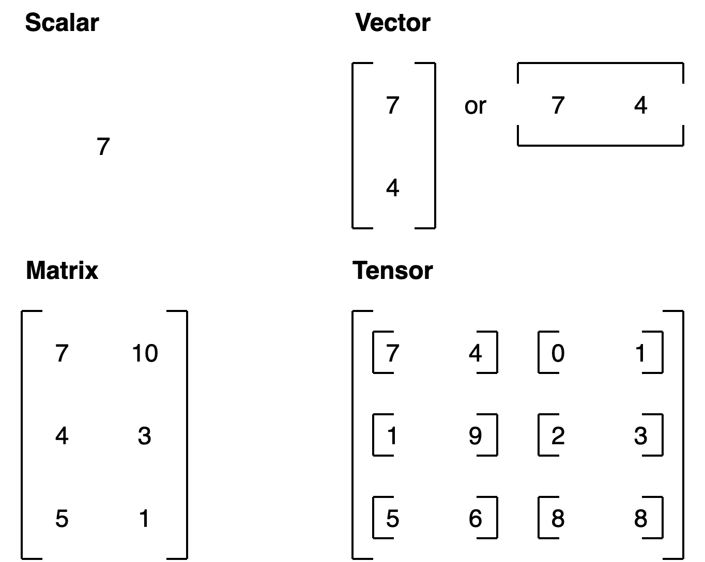

PyTorch#
PyTorch is an open source machine learning and deep learning framework.
PyTorch allows you to manipulate and process data and write machine learning algorithms using Python code.
PyTorch also helps take care of many things such as GPU acceleration (making your code run faster) behind the scenes.
So you can focus on manipulating data and writing algorithms and PyTorch will make sure it runs fast.
Note: Before running any of the code in this notebook, you should have gone through the PyTorch setup steps.
However, if you’re running on Google Colab, everything should work (Google Colab comes with PyTorch and other libraries installed).
Let’s start by importing PyTorch and checking the version we’re using.
import torch
torch.__version__
'2.4.1'
Tensors#
Tensors are the fundamental building block of machine learning.
Their job is to represent data in a numerical way.
For example, you could represent an image as a tensor with shape [3, 224, 224] which would mean [colour_channels, height, width], as in the image has 3 colour channels (red, green, blue), a height of 224 pixels and a width of 224 pixels.

In tensor-speak (the language used to describe tensors), the tensor would have three dimensions, one for colour_channels, height and width.
Creating tensors#
Reference: torch.Tensor class.
Scalar#
A scalar is a single number and in tensor-speak it’s a zero dimension tensor.
# Scalar
scalar = torch.tensor(7)
scalar
tensor(7)
Check the dimensions of a tensor using the ndim attribute.
scalar.ndim
0
Vectors#
A vector is a single dimension tensor but can contain many numbers.
As in, you could have a vector [3, 2] to describe [bedrooms, bathrooms] in your house. Or you could have [3, 2, 2] to describe [bedrooms, bathrooms, car_parks] in your house.
A vector is flexible in what it can represent (the same with tensors).
# Vector
vector = torch.tensor([7, 7])
vector
tensor([7, 7])
Let’s check its dimensions
# Check the number of dimensions of vector
vector.ndim
1
vector contains two numbers but only has a single dimension.
Trick: A tensor in PyTorch has by the number of square brackets on the outside ([) and you only need to count one side.
To know how many elements are present inside of any dimension vector, use shape attribute. The shape tells you how the elements inside them are arranged.
# Check shape of vector
vector.shape
torch.Size([2])
Two elements we placed inside the square brackets ([7, 7]).
Matrices#
Let’s now see a matrix.
# Matrix
MATRIX = torch.tensor([[7, 8],
[9, 10]])
MATRIX
tensor([[ 7, 8],
[ 9, 10]])
Matrices are as flexible as vectors, except they’ve got an extra dimension.
# Check number of dimensions
MATRIX.ndim
2
MATRIX has two dimensions
Let’s check its shape
MATRIX.shape
torch.Size([2, 2])
MATRIX is two elements deep and two elements wide.
Tensors#
Let’s create a tensor: A scalar, vector , matrice , all can be represented in tensor, along with a more than 2 dimensional (n dimensions) can be represented as a Tensor
# Tensor
TENSOR = torch.tensor([[[1, 2, 3],
[3, 6, 9],
[2, 4, 5]]])
TENSOR
tensor([[[1, 2, 3],
[3, 6, 9],
[2, 4, 5]]])
# Check number of dimensions for TENSOR
TENSOR.ndim
3
And what about its shape?
# Check shape of TENSOR
TENSOR.shape
torch.Size([1, 3, 3])
The dimensions go outer to inner.
That means there’s 1 dimension of 3 by 3.

Note: In practice, you’ll often see scalars and vectors denoted as lowercase letters such as
yora. And matrices and tensors denoted as uppercase letters such asXorW.
Let’s summarise.
Name |
What is it? |
Number of dimensions |
Lower or upper (usually/example) |
|---|---|---|---|
scalar |
a single number |
0 |
Lower ( |
vector |
a number with direction (e.g. wind speed with direction) but can also have many other numbers |
1 |
Lower ( |
matrix |
a 2-dimensional array of numbers |
2 |
Upper ( |
tensor |
an n-dimensional array of numbers |
can be any number, a 0-dimension tensor is a scalar, a 1-dimension tensor is a vector |
Upper ( |

Random tensors#
Machine learning models such as neural networks manipulate and seek patterns within tensors.
A machine learning model often starts out with large random tensors of numbers and adjusts these random numbers as it works through data to better represent it.
In essence:
Start with random numbers -> look at data -> update random numbers -> look at data -> update random numbers...
let’s see how to create a tensor of random numbers.
We can do so using torch.rand() and passing in the size parameter.
# Create a random tensor of size (3, 4)
random_tensor = torch.rand(size=(3, 4))
random_tensor, random_tensor.dtype
(tensor([[0.6541, 0.4807, 0.2162, 0.6168],
[0.4428, 0.6608, 0.6194, 0.8620],
[0.2795, 0.6055, 0.4958, 0.5483]]),
torch.float32)
Get information from tensors#
Once you’ve created tensors , you might want to get some information from them.
shape- what shape is the tensor? (some operations require specific shape rules)dtype- what datatype are the elements within the tensor stored in?device- what device is the tensor stored on? (usually GPU or CPU)
Let’s create a random tensor and find out details about it.
# Create a tensor
some_tensor = torch.rand(3, 4)
# Find out details about it
print(some_tensor)
print(f"Shape of tensor: {some_tensor.shape}")
print(f"Datatype of tensor: {some_tensor.dtype}")
print(f"Device tensor is stored on: {some_tensor.device}") # will default to CPU
tensor([[0.4688, 0.0055, 0.8551, 0.0646],
[0.6538, 0.5157, 0.4071, 0.2109],
[0.9960, 0.3061, 0.9369, 0.7008]])
Shape of tensor: torch.Size([3, 4])
Datatype of tensor: torch.float32
Device tensor is stored on: cpu
Note: When you run into issues in PyTorch, it’s very often one to do with one of the three attributes above.
“what shape are my tensors? what datatype are they and where are they stored? what shape, what datatype, where where where”
Manipulating tensors#
In deep learning, data (images, text, video, audio, protein structures, etc) gets represented as tensors. And tensors are manipulated by doing following operations
Addition
Substraction
Multiplication (element-wise)
Division
Matrix multiplication
These are the basic building blocks of neural networks.
Stacking these building blocks in the right way, you can create the most sophisticated of neural networks.
Basic operations#
Let’s start with a few of the fundamental operations, addition (+), subtraction (-), mutliplication (*).
# Create a tensor of values and add a number to it
tensor = torch.tensor([1, 2, 3])
tensor + 10
tensor([11, 12, 13])
# Multiply it by 10
tensor * 10
tensor([10, 20, 30])
Notice how the tensor values above didn’t end up being tensor([110, 120, 130]), this is because the values inside the tensor don’t change unless they’re reassigned.
# Tensors don't change unless reassigned
tensor
tensor([1, 2, 3])
Let’s subtract a number and this time we’ll reassign the tensor variable.
# Subtract and reassign
tensor = tensor - 10
tensor
tensor([-9, -8, -7])
# Add and reassign
tensor = tensor + 10
tensor
tensor([1, 2, 3])
PyTorch also has a bunch of built-in functions like torch.mul() (short for multiplication) and torch.add() to perform basic operations.
# Can also use torch functions
torch.multiply(tensor, 10)
tensor([10, 20, 30])
# Original tensor is still unchanged
tensor
tensor([1, 2, 3])
However, it’s more common to use the operator symbols like * instead of torch.mul()
# Element-wise multiplication (each element multiplies its equivalent, index 0->0, 1->1, 2->2)
print(tensor, "*", tensor)
print("Equals:", tensor * tensor)
tensor([1, 2, 3]) * tensor([1, 2, 3])
Equals: tensor([1, 4, 9])
Matrix multiplication#
One of the most common operations in machine learning and deep learning algorithms (like neural networks) is matrix multiplication.
PyTorch implements matrix multiplication functionality in the torch.matmul() method.
The main two rules for matrix multiplication to remember are:
The inner dimensions must match:
(3, 2) @ (3, 2)won’t work(2, 3) @ (3, 2)will work(3, 2) @ (2, 3)will work
The resulting matrix has the shape of the outer dimensions:
(2, 3) @ (3, 2)->(2, 2)(3, 2) @ (2, 3)->(3, 3)
Note: “
@” in Python is the symbol for matrix multiplication.
Resource: You can see all of the rules for matrix multiplication using
torch.matmul()in the PyTorch documentation.
Let’s create a tensor and perform element-wise multiplication and matrix multiplication on it.
import torch
tensor = torch.tensor([1, 2, 3])
tensor.shape
torch.Size([3])
The difference between element-wise multiplication and matrix multiplication is the addition of values.
For our tensor variable with values [1, 2, 3]:
Operation |
Calculation |
Code |
|---|---|---|
Element-wise multiplication |
|
|
Matrix multiplication |
|
|
# Element-wise matrix multiplication
tensor * tensor
tensor([1, 4, 9])
# Matrix multiplication
torch.matmul(tensor, tensor)
tensor(14)
# Can also use the "@" symbol for matrix multiplication, though not recommended
tensor @ tensor
tensor(14)
You can do matrix multiplication by hand but it’s not recommended.
The in-built torch.matmul() method is faster.
%%time
# Matrix multiplication by hand
# (avoid doing operations with for loops at all cost, they are computationally expensive)
value = 0
for i in range(len(tensor)):
value += tensor[i] * tensor[i]
value
CPU times: user 773 µs, sys: 0 ns, total: 773 µs
Wall time: 499 µs
tensor(14)
%%time
torch.matmul(tensor, tensor)
CPU times: user 146 µs, sys: 83 µs, total: 229 µs
Wall time: 171 µs
tensor(14)
One of the most common errors in deep learning (shape errors)
Because much of deep learning is multiplying and performing operations on matrices and matrices have a strict rule about what shapes and sizes can be combined, one of the most common errors you’ll run into in deep learning is shape mismatches.
# Shapes need to be in the right way
tensor_A = torch.tensor([[1, 2],
[3, 4],
[5, 6]], dtype=torch.float32)
tensor_B = torch.tensor([[7, 10],
[8, 11],
[9, 12]], dtype=torch.float32)
torch.matmul(tensor_A, tensor_B) # (this will error)
---------------------------------------------------------------------------
RuntimeError Traceback (most recent call last)
/home/daniel/code/pytorch/pytorch-course/pytorch-deep-learning/00_pytorch_fundamentals.ipynb Cell 75 in <cell line: 10>()
<a href='vscode-notebook-cell://ssh-remote%2B7b22686f73744e616d65223a22544954414e2d525458227d/home/daniel/code/pytorch/pytorch-course/pytorch-deep-learning/00_pytorch_fundamentals.ipynb#Y134sdnNjb2RlLXJlbW90ZQ%3D%3D?line=1'>2</a> tensor_A = torch.tensor([[1, 2],
<a href='vscode-notebook-cell://ssh-remote%2B7b22686f73744e616d65223a22544954414e2d525458227d/home/daniel/code/pytorch/pytorch-course/pytorch-deep-learning/00_pytorch_fundamentals.ipynb#Y134sdnNjb2RlLXJlbW90ZQ%3D%3D?line=2'>3</a> [3, 4],
<a href='vscode-notebook-cell://ssh-remote%2B7b22686f73744e616d65223a22544954414e2d525458227d/home/daniel/code/pytorch/pytorch-course/pytorch-deep-learning/00_pytorch_fundamentals.ipynb#Y134sdnNjb2RlLXJlbW90ZQ%3D%3D?line=3'>4</a> [5, 6]], dtype=torch.float32)
<a href='vscode-notebook-cell://ssh-remote%2B7b22686f73744e616d65223a22544954414e2d525458227d/home/daniel/code/pytorch/pytorch-course/pytorch-deep-learning/00_pytorch_fundamentals.ipynb#Y134sdnNjb2RlLXJlbW90ZQ%3D%3D?line=5'>6</a> tensor_B = torch.tensor([[7, 10],
<a href='vscode-notebook-cell://ssh-remote%2B7b22686f73744e616d65223a22544954414e2d525458227d/home/daniel/code/pytorch/pytorch-course/pytorch-deep-learning/00_pytorch_fundamentals.ipynb#Y134sdnNjb2RlLXJlbW90ZQ%3D%3D?line=6'>7</a> [8, 11],
<a href='vscode-notebook-cell://ssh-remote%2B7b22686f73744e616d65223a22544954414e2d525458227d/home/daniel/code/pytorch/pytorch-course/pytorch-deep-learning/00_pytorch_fundamentals.ipynb#Y134sdnNjb2RlLXJlbW90ZQ%3D%3D?line=7'>8</a> [9, 12]], dtype=torch.float32)
---> <a href='vscode-notebook-cell://ssh-remote%2B7b22686f73744e616d65223a22544954414e2d525458227d/home/daniel/code/pytorch/pytorch-course/pytorch-deep-learning/00_pytorch_fundamentals.ipynb#Y134sdnNjb2RlLXJlbW90ZQ%3D%3D?line=9'>10</a> torch.matmul(tensor_A, tensor_B)
RuntimeError: mat1 and mat2 shapes cannot be multiplied (3x2 and 3x2)
We can make matrix multiplication work between tensor_A and tensor_B by making their inner dimensions match.
One of the ways to do this is with a transpose (switch the dimensions of a given tensor).
You can perform transposes in PyTorch using either:
torch.transpose(input, dim0, dim1)- whereinputis the desired tensor to transpose anddim0anddim1are the dimensions to be swapped.tensor.T- wheretensoris the desired tensor to transpose.
Let’s try the latter.
# View tensor_A and tensor_B
print(tensor_A)
print(tensor_B)
tensor([[1., 2.],
[3., 4.],
[5., 6.]])
tensor([[ 7., 10.],
[ 8., 11.],
[ 9., 12.]])
# View tensor_A and tensor_B.T
print(tensor_A)
print(tensor_B.T)
tensor([[1., 2.],
[3., 4.],
[5., 6.]])
tensor([[ 7., 8., 9.],
[10., 11., 12.]])
# The operation works when tensor_B is transposed
print(f"Original shapes: tensor_A = {tensor_A.shape}, tensor_B = {tensor_B.shape}\n")
print(f"New shapes: tensor_A = {tensor_A.shape} (same as above), tensor_B.T = {tensor_B.T.shape}\n")
print(f"Multiplying: {tensor_A.shape} * {tensor_B.T.shape} <- inner dimensions match\n")
print("Output:\n")
output = torch.matmul(tensor_A, tensor_B.T)
print(output)
print(f"\nOutput shape: {output.shape}")
Original shapes: tensor_A = torch.Size([3, 2]), tensor_B = torch.Size([3, 2])
New shapes: tensor_A = torch.Size([3, 2]) (same as above), tensor_B.T = torch.Size([2, 3])
Multiplying: torch.Size([3, 2]) * torch.Size([2, 3]) <- inner dimensions match
Output:
tensor([[ 27., 30., 33.],
[ 61., 68., 75.],
[ 95., 106., 117.]])
Output shape: torch.Size([3, 3])
You can also use torch.mm() which is a short for torch.matmul().
# torch.mm is a shortcut for matmul
torch.mm(tensor_A, tensor_B.T)
tensor([[ 27., 30., 33.],
[ 61., 68., 75.],
[ 95., 106., 117.]])
Without the transpose, the rules of matrix mulitplication aren’t fulfilled and we get an error like above.

You can create your own matrix multiplication visuals like this at http://matrixmultiplication.xyz/.
Note: A matrix multiplication like this is also referred to as the dot product of two matrices.
Neural networks are full of matrix multiplications and dot products.
The torch.nn.Linear() module (we’ll see this in action later on), also known as a feed-forward layer or fully connected layer, implements a matrix multiplication between an input x and a weights matrix A.
Where:
xis the input to the layer (deep learning is a stack of layers liketorch.nn.Linear()and others on top of each other).Ais the weights matrix created by the layer, this starts out as random numbers that get adjusted as a neural network learns to better represent patterns in the data (notice the “T”, that’s because the weights matrix gets transposed).Note: You might also often see
Wor another letter likeXused to showcase the weights matrix.
bis the bias term used to slightly offset the weights and inputs.yis the output (a manipulation of the input in the hopes to discover patterns in it).
This is a linear function (you may have seen something like \(y = mx+b\) in high school or elsewhere), and can be used to draw a straight line!
Let’s play around with a linear layer.
Try changing the values of in_features and out_features below and see what happens.
# Since the linear layer starts with a random weights matrix, let's make it reproducible (more on this later)
torch.manual_seed(42)
# This uses matrix multiplication
linear = torch.nn.Linear(in_features=2, # in_features = matches inner dimension of input
out_features=6) # out_features = describes outer value
x = tensor_A
output = linear(x)
print(f"Input shape: {x.shape}\n")
print(f"Output:\n{output}\n\nOutput shape: {output.shape}")
Input shape: torch.Size([3, 2])
Output:
tensor([[2.2368, 1.2292, 0.4714, 0.3864, 0.1309, 0.9838],
[4.4919, 2.1970, 0.4469, 0.5285, 0.3401, 2.4777],
[6.7469, 3.1648, 0.4224, 0.6705, 0.5493, 3.9716]],
grad_fn=<AddmmBackward0>)
Output shape: torch.Size([3, 6])
Matrix multiplication can be a confusing topic at first.
But after you’ve played around with it a few times and looked into some neural networks, you’ll notice it’s everywhere.
Matrix multiplication is all you need.
When you start digging into neural network layers and building your own, you’ll find matrix multiplications everywhere.
Important torch operations#
Often times you’ll want to reshape or change the dimensions of your tensors without actually changing the values inside them.
To do so, some popular methods are:
Method |
One-line description |
|---|---|
Reshapes |
|
Returns a view of the original tensor in a different |
|
Concatenates a sequence of |
|
Squeezes |
|
Returns |
|
Returns a view of the original |
Deep learning models (neural networks) are all about manipulating tensors in some way. And because of the rules of matrix multiplication, if you’ve got shape mismatches, you’ll run into errors. These methods help you make sure the right elements of your tensors are mixing with the right elements of other tensors.
Let’s try them out.
# Create a tensor
import torch
x = torch.arange(1., 8.)
x, x.shape
(tensor([1., 2., 3., 4., 5., 6., 7.]), torch.Size([7]))
Now let’s add an extra dimension with torch.reshape().
# Add an extra dimension
x_reshaped = x.reshape(1, 7)
x_reshaped, x_reshaped.shape
(tensor([[1., 2., 3., 4., 5., 6., 7.]]), torch.Size([1, 7]))
We can also change the view with torch.view().
# Change view (keeps same data as original but changes view)
# See more: https://stackoverflow.com/a/54507446/7900723
z = x.view(1, 7)
z, z.shape
(tensor([[1., 2., 3., 4., 5., 6., 7.]]), torch.Size([1, 7]))
Remember though, changing the view of a tensor with torch.view() really only creates a new view of the same tensor.
So changing the view changes the original tensor too.
# Changing z changes x
z[:, 0] = 5
z, x
(tensor([[5., 2., 3., 4., 5., 6., 7.]]), tensor([5., 2., 3., 4., 5., 6., 7.]))
If we wanted to stack our new tensor on top of itself five times, we could do so with torch.stack().
# Stack tensors on top of each other
x_stacked = torch.stack([x, x, x, x], dim=0) # try changing dim to dim=1 and see what happens
x_stacked
tensor([[5., 2., 3., 4., 5., 6., 7.],
[5., 2., 3., 4., 5., 6., 7.],
[5., 2., 3., 4., 5., 6., 7.],
[5., 2., 3., 4., 5., 6., 7.]])
How about removing all single dimensions from a tensor?
To do so you can use torch.squeeze()
print(f"Previous tensor: {x_reshaped}")
print(f"Previous shape: {x_reshaped.shape}")
# Remove extra dimension from x_reshaped
x_squeezed = x_reshaped.squeeze()
print(f"\nNew tensor: {x_squeezed}")
print(f"New shape: {x_squeezed.shape}")
Previous tensor: tensor([[5., 2., 3., 4., 5., 6., 7.]])
Previous shape: torch.Size([1, 7])
New tensor: tensor([5., 2., 3., 4., 5., 6., 7.])
New shape: torch.Size([7])
And to do the reverse of torch.squeeze() you can use torch.unsqueeze() to add a dimension value of 1 at a specific index.
print(f"Previous tensor: {x_squeezed}")
print(f"Previous shape: {x_squeezed.shape}")
## Add an extra dimension with unsqueeze
x_unsqueezed = x_squeezed.unsqueeze(dim=0)
print(f"\nNew tensor: {x_unsqueezed}")
print(f"New shape: {x_unsqueezed.shape}")
Previous tensor: tensor([5., 2., 3., 4., 5., 6., 7.])
Previous shape: torch.Size([7])
New tensor: tensor([[5., 2., 3., 4., 5., 6., 7.]])
New shape: torch.Size([1, 7])
You can also rearrange the order of axes values with torch.permute(input, dims), where the input gets turned into a view with new dims.
# Create tensor with specific shape
x_original = torch.rand(size=(224, 224, 3))
# Permute the original tensor to rearrange the axis order
x_permuted = x_original.permute(2, 0, 1) # shifts axis 0->1, 1->2, 2->0
print(f"Previous shape: {x_original.shape}")
print(f"New shape: {x_permuted.shape}")
Previous shape: torch.Size([224, 224, 3])
New shape: torch.Size([3, 224, 224])
Note: Because permuting returns a view (shares the same data as the original), the values in the permuted tensor will be the same as the original tensor and if you change the values in the view, it will change the values of the original.
Indexing#
Sometimes you’ll want to select specific data from tensors (for example, only the first column or second row).
To do so, you can use indexing.
# Create a tensor
import torch
x = torch.arange(1, 10).reshape(1, 3, 3)
x, x.shape
(tensor([[[1, 2, 3],
[4, 5, 6],
[7, 8, 9]]]),
torch.Size([1, 3, 3]))
Indexing values goes outer dimension -> inner dimension (check out the square brackets).
# Let's index bracket by bracket
print(f"First square bracket:\n{x[0]}")
print(f"Second square bracket: {x[0][0]}")
print(f"Third square bracket: {x[0][0][0]}")
First square bracket:
tensor([[1, 2, 3],
[4, 5, 6],
[7, 8, 9]])
Second square bracket: tensor([1, 2, 3])
Third square bracket: 1
You can also use : to specify “all values in this dimension” and then use a comma (,) to add another dimension.
# Get all values of 0th dimension and the 0 index of 1st dimension
x[:, 0]
tensor([[1, 2, 3]])
# Get all values of 0th & 1st dimensions but only index 1 of 2nd dimension
x[:, :, 1]
tensor([[2, 5, 8]])
# Get all values of the 0 dimension but only the 1 index value of the 1st and 2nd dimension
x[:, 1, 1]
tensor([5])
# Get index 0 of 0th and 1st dimension and all values of 2nd dimension
x[0, 0, :] # same as x[0][0]
tensor([1, 2, 3])
Indexing can be quite confusing to begin with, especially with larger tensors But with a bit of practice and following the data explorer’s motto (visualize, visualize, visualize), you’ll start to get the hang of it.
PyTorch tensors & NumPy#
Since NumPy is a popular Python numerical computing library, PyTorch has functionality to interact with it nicely.
The two main methods you’ll want to use for NumPy to PyTorch (and back again) are:
torch.from_numpy(ndarray)- NumPy array -> PyTorch tensor.torch.Tensor.numpy()- PyTorch tensor -> NumPy array.
Let’s try them out.
# NumPy array to tensor
import torch
import numpy as np
array = np.arange(1.0, 8.0)
tensor = torch.from_numpy(array)
array, tensor
(array([1., 2., 3., 4., 5., 6., 7.]),
tensor([1., 2., 3., 4., 5., 6., 7.], dtype=torch.float64))
# Change the array, keep the tensor
array = array + 1
array, tensor
(array([2., 3., 4., 5., 6., 7., 8.]),
tensor([1., 2., 3., 4., 5., 6., 7.], dtype=torch.float64))
And if you want to go from PyTorch tensor to NumPy array, you can call tensor.numpy().
# Tensor to NumPy array
tensor = torch.ones(7) # create a tensor of ones with dtype=float32
numpy_tensor = tensor.numpy() # will be dtype=float32 unless changed
tensor, numpy_tensor
(tensor([1., 1., 1., 1., 1., 1., 1.]),
array([1., 1., 1., 1., 1., 1., 1.], dtype=float32))
And the same rule applies as above, if you change the original tensor, the new numpy_tensor stays the same.
# Change the tensor, keep the array the same
tensor = tensor + 1
tensor, numpy_tensor
(tensor([2., 2., 2., 2., 2., 2., 2.]),
array([1., 1., 1., 1., 1., 1., 1.], dtype=float32))
Significance of random seeding#
In machine learning codebases, you will see aseeding method like random_seed(42)
As you learn more about neural networks and machine learning, you’ll start to discover how much randomness plays a part.
Neural networks start with random numbers to describe patterns in data (these numbers are poor descriptions) and try to improve those random numbers using tensor operations to better describe patterns in data.
In short:
start with random numbers -> tensor operations -> try to make better (again and again and again)
But, you want Reproducibility of your code everytime you run it (for repeatable experiments), because random is so random, that every time you run, random will generate different numbers. Which means you wont have a reproducibility,
For example, you create an algorithm capable of achieving X performance.
And then your friend tries it out to verify you’re not crazy.
How could they do such a thing?
That’s where reproducibility comes in.
In other words, can you get the same (or very similar) results on your computer running the same code as I get on mine?
import torch
# Create two random tensors
random_tensor_A = torch.rand(3, 4)
random_tensor_B = torch.rand(3, 4)
print(f"Tensor A:\n{random_tensor_A}\n")
print(f"Tensor B:\n{random_tensor_B}\n")
print(f"Does Tensor A equal Tensor B? (anywhere)")
random_tensor_A == random_tensor_B
Tensor A:
tensor([[0.8016, 0.3649, 0.6286, 0.9663],
[0.7687, 0.4566, 0.5745, 0.9200],
[0.3230, 0.8613, 0.0919, 0.3102]])
Tensor B:
tensor([[0.9536, 0.6002, 0.0351, 0.6826],
[0.3743, 0.5220, 0.1336, 0.9666],
[0.9754, 0.8474, 0.8988, 0.1105]])
Does Tensor A equal Tensor B? (anywhere)
tensor([[False, False, False, False],
[False, False, False, False],
[False, False, False, False]])
Just as you might’ve expected, the tensors come out with different values.
But what if you wanted to created two random tensors with the same values.
As in, the tensors would still contain random values but they would be of the same flavour.
That’s where torch.manual_seed(seed) comes in, where seed is an integer (like 42 but it could be anything) that flavours the randomness.
Let’s try it out by creating some more flavoured random tensors.
import torch
import random
# # Set the random seed
RANDOM_SEED=42 # try changing this to different values and see what happens to the numbers below
torch.manual_seed(seed=RANDOM_SEED)
random_tensor_C = torch.rand(3, 4)
# Have to reset the seed every time a new rand() is called
# Without this, tensor_D would be different to tensor_C
torch.random.manual_seed(seed=RANDOM_SEED) # try commenting this line out and seeing what happens
random_tensor_D = torch.rand(3, 4)
print(f"Tensor C:\n{random_tensor_C}\n")
print(f"Tensor D:\n{random_tensor_D}\n")
print(f"Does Tensor C equal Tensor D? (anywhere)")
random_tensor_C == random_tensor_D
Tensor C:
tensor([[0.8823, 0.9150, 0.3829, 0.9593],
[0.3904, 0.6009, 0.2566, 0.7936],
[0.9408, 0.1332, 0.9346, 0.5936]])
Tensor D:
tensor([[0.8823, 0.9150, 0.3829, 0.9593],
[0.3904, 0.6009, 0.2566, 0.7936],
[0.9408, 0.1332, 0.9346, 0.5936]])
Does Tensor C equal Tensor D? (anywhere)
tensor([[True, True, True, True],
[True, True, True, True],
[True, True, True, True]])
Running tensors on GPUs#
Deep learning algorithms require a lot of numerical operations.
And by default these operations are often done on a CPU (computer processing unit).
However, there’s another common piece of hardware called a GPU (graphics processing unit), which is often much faster at performing the specific types of operations neural networks need (matrix multiplications) than CPUs.
Your computer might have one.
If so, you should look to use it whenever you can to train neural networks because chances are it’ll speed up the training time dramatically.
There are a few ways to first get access to a GPU and secondly get PyTorch to use the GPU.
Note: When I reference “GPU” , I’m referencing a Nvidia GPU with CUDA enabled (CUDA is a computing platform and API that helps allow GPUs be used for general purpose computing & not just graphics) unless otherwise specified.
1. Getting a GPU#
You may already know what’s going on when I say GPU. But if not, there are a few ways to get access to one.
Method |
Difficulty to setup |
Pros |
Cons |
How to setup |
|---|---|---|---|---|
Google Colab |
Easy |
Free to use, almost zero setup required, can share work with others as easy as a link |
Doesn’t save your data outputs, limited compute, subject to timeouts |
|
Use your own |
Medium |
Run everything locally on your own machine |
GPUs aren’t free, require upfront cost |
Follow the PyTorch installation guidelines |
Cloud computing (AWS, GCP, Azure) |
Medium-Hard |
Small upfront cost, access to almost infinite compute |
Can get expensive if running continually, takes some time to setup right |
Follow the PyTorch installation guidelines |
To check if you’ve got access to a Nvidia GPU, you can run !nvidia-smi where the ! (also called bang) means “run this on the command line”.
!nvidia-smi
Sat Jan 21 08:34:23 2023
+-----------------------------------------------------------------------------+
| NVIDIA-SMI 515.48.07 Driver Version: 515.48.07 CUDA Version: 11.7 |
|-------------------------------+----------------------+----------------------+
| GPU Name Persistence-M| Bus-Id Disp.A | Volatile Uncorr. ECC |
| Fan Temp Perf Pwr:Usage/Cap| Memory-Usage | GPU-Util Compute M. |
| | | MIG M. |
|===============================+======================+======================|
| 0 NVIDIA TITAN RTX On | 00000000:01:00.0 Off | N/A |
| 40% 30C P8 7W / 280W | 177MiB / 24576MiB | 0% Default |
| | | N/A |
+-------------------------------+----------------------+----------------------+
+-----------------------------------------------------------------------------+
| Processes: |
| GPU GI CI PID Type Process name GPU Memory |
| ID ID Usage |
|=============================================================================|
| 0 N/A N/A 1061 G /usr/lib/xorg/Xorg 53MiB |
| 0 N/A N/A 2671131 G /usr/lib/xorg/Xorg 97MiB |
| 0 N/A N/A 2671256 G /usr/bin/gnome-shell 9MiB |
+-----------------------------------------------------------------------------+
If you don’t have a Nvidia GPU accessible, the above will output something like:
NVIDIA-SMI has failed because it couldn't communicate with the NVIDIA driver. Make sure that the latest NVIDIA driver is installed and running.
In that case, go back up and follow the install steps.
If you do have a GPU, the line above will output something like:
Wed Jan 19 22:09:08 2022
+-----------------------------------------------------------------------------+
| NVIDIA-SMI 495.46 Driver Version: 460.32.03 CUDA Version: 11.2 |
|-------------------------------+----------------------+----------------------+
| GPU Name Persistence-M| Bus-Id Disp.A | Volatile Uncorr. ECC |
| Fan Temp Perf Pwr:Usage/Cap| Memory-Usage | GPU-Util Compute M. |
| | | MIG M. |
|===============================+======================+======================|
| 0 Tesla P100-PCIE... Off | 00000000:00:04.0 Off | 0 |
| N/A 35C P0 27W / 250W | 0MiB / 16280MiB | 0% Default |
| | | N/A |
+-------------------------------+----------------------+----------------------+
+-----------------------------------------------------------------------------+
| Processes: |
| GPU GI CI PID Type Process name GPU Memory |
| ID ID Usage |
|=============================================================================|
| No running processes found |
+-----------------------------------------------------------------------------+
2. Getting PyTorch to run on the GPU#
Once you’ve got a GPU ready to access, the next step is getting PyTorch to use for storing data (tensors) and computing on data (performing operations on tensors).
To do so, you can use the torch.cuda package.
Rather than talk about it, let’s try it out.
You can test if PyTorch has access to a GPU using torch.cuda.is_available().
# Check for GPU
import torch
torch.cuda.is_available()
True
If the above outputs True, PyTorch can see and use the GPU, if it outputs False, it can’t see the GPU and in that case, you’ll have to go back through the installation steps.
Now, let’s say you wanted to setup your code so it ran on CPU or the GPU if it was available.
That way, if you or someone decides to run your code, it’ll work regardless of the computing device they’re using.
Let’s create a device variable to store what kind of device is available.
# Set device type
device = "cuda" if torch.cuda.is_available() else "cpu"
device
'cuda'
If the above output "cuda" it means we can set all of our PyTorch code to use the available CUDA device (a GPU) and if it output "cpu", our PyTorch code will stick with the CPU.
Note: In PyTorch, it’s best practice to write device agnostic code. This means code that’ll run on CPU (always available) or GPU (if available).
If you want to do faster computing you can use a GPU but if you want to do much faster computing, you can use multiple GPUs.
You can count the number of GPUs PyTorch has access to using torch.cuda.device_count().
# Count number of devices
torch.cuda.device_count()
1
Knowing the number of GPUs PyTorch has access to is helpful incase you wanted to run a specific process on one GPU and another process on another (PyTorch also has features to let you run a process across all GPUs).
2.1 Getting PyTorch to run on Apple Silicon#
In order to run PyTorch on Apple’s M1/M2/M3 GPUs you can use the torch.backends.mps module.
Be sure that the versions of the macOS and Pytorch are updated.
You can test if PyTorch has access to a GPU using torch.backends.mps.is_available().
# Check for Apple Silicon GPU
import torch
torch.backends.mps.is_available() # Note this will print false if you're not running on a Mac
True
# Set device type
device = "mps" if torch.backends.mps.is_available() else "cpu"
device
'mps'
As before, if the above output "mps" it means we can set all of our PyTorch code to use the available Apple Silicon GPU.
if torch.cuda.is_available():
device = "cuda" # Use NVIDIA GPU (if available)
elif torch.backends.mps.is_available():
device = "mps" # Use Apple Silicon GPU (if available)
else:
device = "cpu" # Default to CPU if no GPU is available
3. Putting tensors (and models) on the GPU#
You can put tensors (and models, we’ll see this later) on a specific device by calling to(device) on them. Where device is the target device you’d like the tensor (or model) to go to.
Why do this?
GPUs offer far faster numerical computing than CPUs do and if a GPU isn’t available, because of our device agnostic code (see above), it’ll run on the CPU.
Note: Putting a tensor on GPU using
to(device)(e.g.some_tensor.to(device)) returns a copy of that tensor, e.g. the same tensor will be on CPU and GPU. To overwrite tensors, reassign them:
some_tensor = some_tensor.to(device)
Let’s try creating a tensor and putting it on the GPU (if it’s available).
# Create tensor (default on CPU)
tensor = torch.tensor([1, 2, 3])
# Tensor not on GPU
print(tensor, tensor.device)
# Move tensor to GPU (if available)
tensor_on_gpu = tensor.to(device)
tensor_on_gpu
tensor([1, 2, 3]) cpu
tensor([1, 2, 3], device='mps:0')
If you have a GPU available, the above code will output something like:
tensor([1, 2, 3]) cpu
tensor([1, 2, 3], device='cuda:0')
Notice the second tensor has device='cuda:0', this means it’s stored on the 0th GPU available (GPUs are 0 indexed, if two GPUs were available, they’d be 'cuda:0' and 'cuda:1' respectively, up to 'cuda:n').
4. Moving tensors back to the CPU#
What if we wanted to move the tensor back to CPU?
For example, you’ll want to do this if you want to interact with your tensors with NumPy (NumPy does not leverage the GPU).
Let’s try using the torch.Tensor.numpy() method on our tensor_on_gpu.
# If tensor is on GPU, can't transform it to NumPy (this will error)
tensor_on_gpu.numpy()
---------------------------------------------------------------------------
TypeError Traceback (most recent call last)
/home/daniel/code/pytorch/pytorch-course/pytorch-deep-learning/00_pytorch_fundamentals.ipynb Cell 157 in <cell line: 2>()
<a href='vscode-notebook-cell://ssh-remote%2B7b22686f73744e616d65223a22544954414e2d525458227d/home/daniel/code/pytorch/pytorch-course/pytorch-deep-learning/00_pytorch_fundamentals.ipynb#Y312sdnNjb2RlLXJlbW90ZQ%3D%3D?line=0'>1</a> # If tensor is on GPU, can't transform it to NumPy (this will error)
----> <a href='vscode-notebook-cell://ssh-remote%2B7b22686f73744e616d65223a22544954414e2d525458227d/home/daniel/code/pytorch/pytorch-course/pytorch-deep-learning/00_pytorch_fundamentals.ipynb#Y312sdnNjb2RlLXJlbW90ZQ%3D%3D?line=1'>2</a> tensor_on_gpu.numpy()
TypeError: can't convert cuda:0 device type tensor to numpy. Use Tensor.cpu() to copy the tensor to host memory first.
Instead, to get a tensor back to CPU and usable with NumPy we can use Tensor.cpu().
This copies the tensor to CPU memory so it’s usable with CPUs.
# Instead, copy the tensor back to cpu
tensor_back_on_cpu = tensor_on_gpu.cpu().numpy()
tensor_back_on_cpu
array([1, 2, 3])
The above returns a copy of the GPU tensor in CPU memory so the original tensor is still on GPU.
tensor_on_gpu
tensor([1, 2, 3], device='cuda:0')